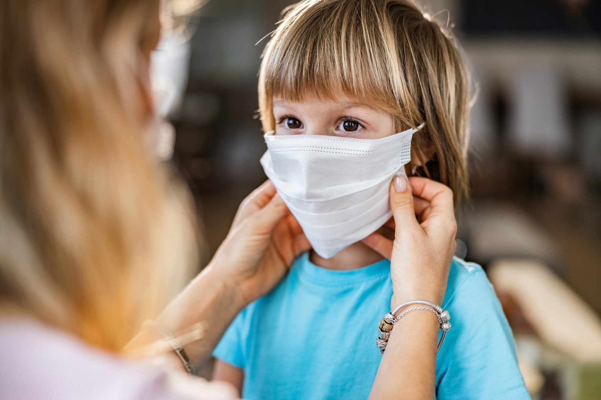

ბავშვები პატარები არიან და არ ესმით რა არის პანდემია; ბავშვები პატარები არიან და ვერ ხვდებიან, რა ხდება მსოფლიოში; ბავშვები პატარები არიან და იმდენს არ ფიქრობენ არსებულ სიტუაციაზე, რამდენსაც დიდები; ბავშვები პატარები არიან და ვერ მიხვდებიან, თუ ვეტყვით, რომ არაფერიც არ ხდება — ყველა ეს მოსაზრება მცდარია, რადგან სინამდვილეში, ბავშვიც სრულფასოვანი ადამიანია.
პანდემია ბავშვებზე და მათ ფსიქიკურ კეთილდღეობაზეც მოქმედებს და რადგან ბავშვებს, ყველა გადაწყვეტილების დამოუკიდებლად მიღება ნამდვილად არ შეუძლიათ, მშობლებს ორმაგი პასუხისმგებლობა ეკისრებათ, რომ ასეთ დროს არა მხოლოდ საკუთარი, არამედ შვილების სიმშვიდეზეც იზრუნონ.
უსაფრთხოების განცდის შენარჩუნება
აღსანიშნავია, რომ პანდემიამ აბსოლუტურად "ამოაყირავა" ბავშვების დღის რეჟიმი, ის საქმე, რითიც იყვნენ დაკავებულნი, მაგალითად, ვიღაც დადიოდა ბაღში, სკოლაში, ხატვის ან სპორტის წრეზე, შესაბამისად სხვანაირი გახდა მათი სოციალური ურთიერთობებიც.
გარდა ამისა, ბავშვებიც ჩვეულებრივი სოციალური არსებები არიან, შესაბამისად, მათაც სჭირდებათ პირადი სივრცე, მათი ინტერესების გათვალისწინება. ადამიანებისთვის დისკომფორტს ქმნიდა ის, რომ დიდი თუ პატარა სახლის შემთხვევაში, ოჯახის წევრებს მაინც მუდმივად ერთად უწევდათ ყოფნა.
მეორე მხრივ, პრობლემაა ქართული ოჯახების მუდმივად "პირდაპირ ეთერში ყოფნის ტრადიცია" — დღის განმავლობაში, დილიდან საღამომდე, სხვადასხვა ტელეარხზე ჩართული საინფორმაციო გამოშვებები. ფსიქოლოგი გვიხსნის, რომ ორი თვის მანძილზე ბავშვებისთვის სახალისო და საინტერესო საინფორმაციო გამოშვებებში თითქმის არაფერი ყოფილა და დიდი დოზით უარყოფითი ინფორმაცია ზრდასრულზეც და მცირეწლოვანზეც ერთნაირად უარყოფითად მოქმედებს. მისი თქმით, მშობლებმა, რომლებმაც ინფორმაციის გაფილტვრა მოახერხეს, ამ სიტუაციიდან გამოსავალი შედარებით მარტივად იპოვეს. ზოგადად, ფსიქოლოგის განმარტებით, მშობლის მთავარი ფუნქცია ამ პერიოდში უსაფრთხოების განცდის შენარჩუნებაა.
ინფორმაცია ტყუილის ნაცვლად

ამ შემთხვევაში, მთავარია მშობლებს არ დაავიწყდეთ, რომ ბავშვები კარგად ხვდებიან როდის ატყუებენ ზრდასრულები, ისინი მშვენივრად კითხულობენ ემოციურ ნაწილს, ამიტომ, როდესაც მშობელი ღელავს, ნერვიულობს და ზედმეტად ჭარბობს ნეგატიური ემოციები, ეს მათზე სარკისებურად აისახება.
ფსიქოლოგები ამბობენ, რომ მას შემდეგ, რაც მშობელი ბავშვს ისე შეხედავს, როგორც სრულფასოვან ადამიანს, თავისთავად დგება შვილის ინფორმირებულობის საკითხიც, მათ შორის პანდემიაზე.
სპეციალისტი განმარტავს, რომ ბავშვის მოტყუებაში იგულისხმება ის ფაქტიც, როცა მშობლები მისთვის სიტუაციის არიდებას ცდილობენ. მისი თქმით, როცა ბავშვი მშობლისგან გულწრფელობას გრძნობს, მისთვის დამატებითი სირთულეები იხსნება.
პანდემიასაც აქვს დადებითი მხარეები
ფსიქოლოგები მშობლებს ურჩევს, რომ შვილებს პანდემიის დადებითი მხარე დაანახონ. მიუხედავად იმისა, რომ ეს ერთი შეხედვით ცალსახად უარყოფითი მოვლენაა, მასაც შეიძლება მოეძებნოს პოზიტივი.
ამ ეპოქაში დაბადებული ბავშვები მეცნიერებისა და ტექნოლოგიების აღზევების ეპოქაში იზრდებიან. ბავშვებმა უნდა იცოდნენ, რომ სამყარო, რომელშიც ცხოვრობენ, მუდმივად იცვლება და ამ ცვლილებაში დადებითი წვლილის შეტანა მათაც შეუძლიათ.